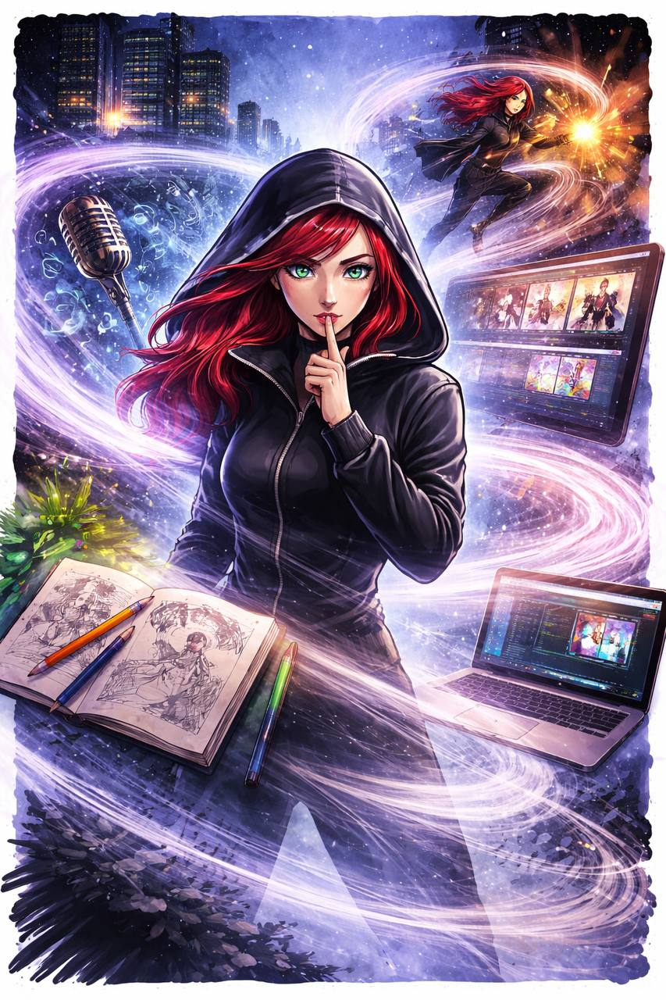

Gia Vey represents adaptation, quiet strength, and control. Through the development of her character and world, this project combines visual design, storytelling, and multimedia elements into one connected experience.
Each page explores a different dimension of her identity, bringing together image, sound, movement, and interaction to create a complete fictional world.
This project allowed me to experiment with different forms of digital media while presenting my work through a cohesive and interactive website.

Final overview of Gia Vey’s world and character development.